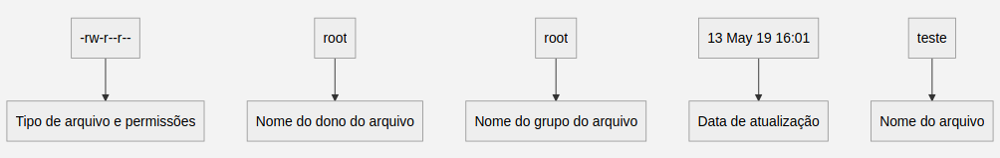
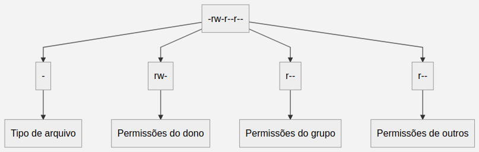
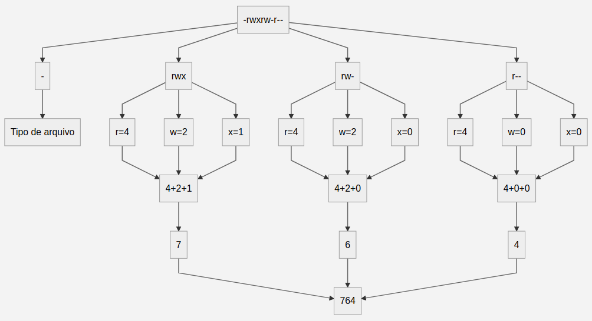

Permissões de acesso
As permissões de acesso protegem o sistema de arquivos do GNU/Linux do uso indevido de pessoas ou programas não autorizados. Para proporcionar essa segurança, o GNU/Linux define o acesso aos arquivos por donos, grupos e outros usuários. A seguir, cada um deles serão explicados:
- Dono: É a pessoa que criou o arquivo, só ela pode modificar as permissões de acesso dele. O seu nome é o mesmo do usuário usado para entrar no GNU/Linux, mas também é possível identifica-lo por um número chamado UID, abreviação de User ID — para vê-lo basta executar o comando
id -u. - Grupo: Permite que vários usuários diferentes tenham acesso a um mesmo arquivo — cada usuário pode fazer parte de um ou mais grupos. Eles podem ser identificados pelo nome utilizado no momento de sua criação ou por um número chamado GID, abreviação de Group ID — para vê-lo basta executar o comando
id -g. - Outros: É a categoria de usuários que não são donos ou não pertencem ao grupo do arquivo.
Tipos de permissões de acesso
No GNU/Linux existem três permissões básicas, são selas:
r: Permissão de leitura para arquivos.w: Permissão de gravação para arquivos — também permite a exclusão do arquivo.x: Permite a execução do arquivo, caso seja um programa executável. Se o arquivo for um diretório, permite que seja acessado através do comandocd.
Essas permissões se aplicam ao dono, grupo e outros. Para visualizá-las basta utilizar a opção -l do comando ls — para mais detalhes desse comando, basta visitar a seção "Controle de Permissões" deste manual. Ao executá-lo, a saída obtida será algo semelhante a isto -rw-r--r-- root root 13 May 19 16:01 teste, onde:

Para poder ler as informações da primeira sequencia de caracteres — Tipo de arquivo e permissões — é preciso saber que:

- O primeiro caractere representa o tipo de arquivo. Ele pode ser:
-: regular;d: diretório;l: link simbólico;b: bloco;c: caractere;p: pipe;s: socket
- Do segundo ao quarto caractere, são as permissão de acesso do dono do arquivo.
- Do quinto ao sétimo caractere, são as permissão de acesso do grupo do arquivo.
- Do oitavo ao décimo caractere, são as permissão de acesso dos outros usuários.
Permissões na notação octal
É possível escrever as permissões com números por meio da notação octal. Ela é uma forma mais objetiva de escrita, pois você especifica diretamente a permissão do dono, grupo e outros. A correspondência dessa notação com a convencional é a seguinte:
- 1 equivale ao
x; - 2 equivale ao
w; - 4 equivale ao
r.
Sabendo disso, já é possível converter as permissões para a notação octal, veja o exemplo:

- Primeiro: divide-se as permissões de usuário, grupo e outros;
- Segundo: Verificar quais permissões foram dadas para cada perfil e efetuar a conversão;
- Terceiro: Efetuar a soma das permissões dadas para cada perfil;
- Quarto: Agrupar o resultado do somatório de cada perfil para obter as permissões no formato octal.
Manipulando permissões
A seguir serão listados os comandos utilizados para manipular as permissões dos arquivos.
chmod
- Utilidade: Alterar as permissões de acesso.
- Estrutura:
chmod[opções][permissões][caminho/arquivo]. - Opções:
-R: Muda permissões de acesso do diretório atual e dos arquivos e subdiretórios contidos nele.
- Permissões: Para definir as permissões com a notação convencional é preciso informar três coisas:
- O que deseja editar — dono(
u), grupo(g) ou outro(o); - A ação que deseja efetuar — adicionar(
+), remover(-) ou redefinir(=) as permissões; - A permissão no formato convencional — leitura(
r), escrita(w) ou execução(e).
- O que deseja editar — dono(
- Macetes:
- É mais fácil editar permissões utilizando a notação octal, pois é possível alterar as permissões do dono, grupo ou outro. Para isso, basta colocar o código octal correspondente ao conjunto de permissões que deseja conceder.
chown
- Utilidade: Muda dono de um arquivo — opcionalmente pode também ser usado para mudar o grupo.
- Estrutura:
chown[opções][dono:grupo][caminho/arquivo] - Opções:
-R: Muda permissões de acesso do diretório atual e dos arquivos e subdiretórios contidos nele.
setfacl
- Utilidade: permite personalizar permissões para usuários ou grupos específicos.
- Estrutura:
setfacl[opções][mascara][caminho/arquivo]. - Opções:
-m: indica o desejo de modificar usuário ou grupo que tem acesso ao arquivo;-x: indica o desejo de excluir as permissões dadas para alguém.-R: Muda permissões de acesso do diretório atual e dos arquivos e subdiretórios contidos nele.
- Mascara: Para definir as permissões é preciso informar:
- O que será editado — usuário(
user:) ou grupo(group:); - Indicar o nome de quem receberá as permissões especiais, com
:ao fim; - Por fim, indicar as permissões dadas — podendo ser feito com a notação convencional quanto na octal.
- O que será editado — usuário(
getfacl
- Utilidade: Visualizar usuários, grupos e suas respectivas permissões de um arquivo.
- Estrutura:
getfacl[opções][mascara][caminho/arquivo].